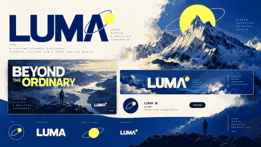
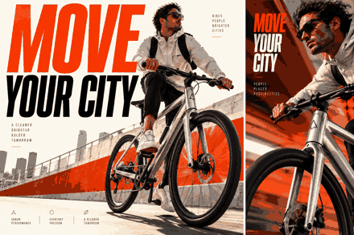
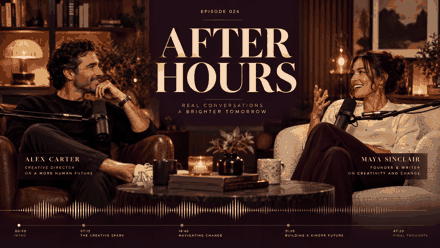
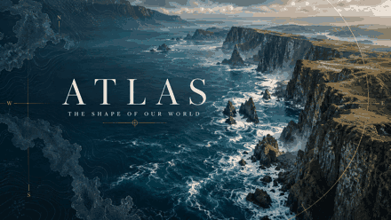
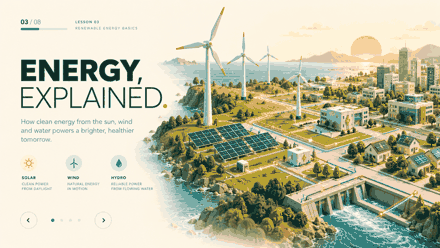
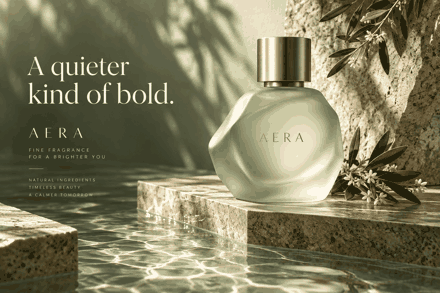
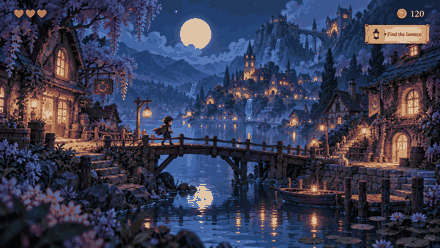
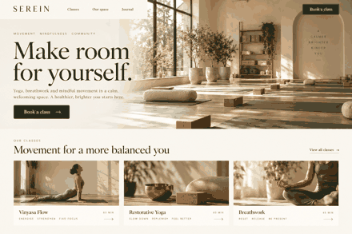
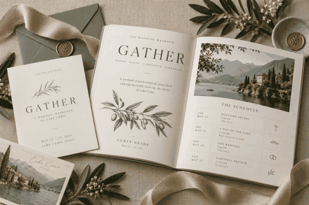
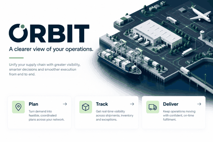

10 disciplines · self-initiated concepts
A portfolio with range.
Original art-direction concepts matched to the supplied creative briefs. GIFs animate still-image camera motion; these are not recordings of finished products.
01 / YouTube branding
Luma — Channel Identity

Build a coherent YouTube identity with a channel banner, thumbnail system, watermark, typography and color rules.
Stack
Illustrator, Photoshop, After Effects
Build deliverables
Banner, 3 thumbnail templates, watermark, 5-second ident
Develop vector logo construction, thumbnail readability and export-safe layouts.
Source brief references: 0001 · PNG image · GIF preview
02 / Social media and advertising
Velo — Social Launch Campaign

Produce a launch campaign with coordinated feed graphics, story layouts and short vertical advertisements.
Stack
Photoshop, Illustrator, Premiere Pro, After Effects
Build deliverables
3 feed posts, 3 stories, 15-second reel with 3 opening hooks
Practice rhythm, captions, product masking and platform-safe composition.
Source brief references: 0010, 0012, 0987 · PNG image · GIF preview
03 / Podcast and multicamera editing
After Hours — Podcast Package

Package a two-camera interview with clean cuts, speaker identification, chapters and compelling short highlights.
Stack
Premiere Pro, After Effects
Build deliverables
Episode edit, opening sequence, lower thirds, 4 vertical shorts
Synchronize cameras and match color; preserve supplied mastered audio when requested.
Source brief references: 0023 · PNG image · GIF preview
04 / Documentary video and motion graphics
Atlas — Documentary Opening

Create a researched documentary opening with archival treatments, restrained map graphics, readable captions and sound design.
Stack
Premiere Pro, After Effects, Audition
Build deliverables
60-second opening, title system, captions and source log
Practice narrative pacing and licensing checks; verify factual statements.
Source brief references: 0058, 0986 · PNG image · GIF preview
05 / E-learning and explainer animation
Forma — Educational Explainer

Turn an educational script into a clear illustrated lesson with visual examples, consistent chapter graphics and captions.
Stack
Illustrator, After Effects, Premiere Pro, Audition
Build deliverables
60-second lesson, reusable graphic kit, subtitles
Practice storyboarding, timing to narration and explanation through visual hierarchy.
Source brief references: 0007 · PNG image · GIF preview
06 / 3D modeling and product rendering
Aera — 3D Product Film

Create a premium product visualization from modeling and materials through lighting, camera work and final compositing.
Stack
Blender, Cycles, After Effects
Build deliverables
Product model, 3 still renders, 8-second camera film
Practice clean geometry, UVs, physically plausible materials and render consistency.
Source brief references: 0892, 0964 · PNG image · GIF preview
07 / Game illustration and interface
Moonvale — Game Art & HUD

Design an original game environment and matching interface with a readable HUD, scene depth and consistent illustrated assets.
Stack
Photoshop, Aseprite, Unity, C#
Build deliverables
Environment art, layered assets, HUD mockup, small animated scene
Practice sprite import, texture atlases, parallax and readable HUD scaling.
Source brief references: 0276 · PNG image · GIF preview
08 / Web design and UI/UX
Serein — Wellness Website

Design a responsive wellness booking website with clear navigation, class discovery and a focused booking journey.
Stack
Figma, Photoshop; optional implementation: Next.js, TypeScript, Tailwind CSS
Build deliverables
Desktop and mobile screens, components, clickable booking prototype
Practice responsive layout, contrast, focus states and empty/error states. Backend booking is a separate implementation scope.
Source brief references: 0053 · PNG image · GIF preview
09 / Editorial and print design
Gather — Wedding Guide

Lay out a wedding guest guide with schedule, venue information, dress code and coordinated stationery.
Stack
InDesign, Illustrator, Photoshop
Build deliverables
8-page guide, invitation, digital PDF and print-ready PDF
Practice editorial hierarchy, bleeds, embedded fonts and export preflight.
Source brief references: 0320 · PNG image · GIF preview
10 / Pitch decks and business communication
Orbit — Product Presentation

Build a polished commercial presentation that explains a product through clear messaging, diagrams and consistent slide layouts.
Stack
Figma, PowerPoint, Illustrator
Build deliverables
10-slide presentation, editable master layouts, product one-pager
Practice concise business storytelling, editable charts and slide consistency.
Source brief references: 0123 · PNG image · GIF preview